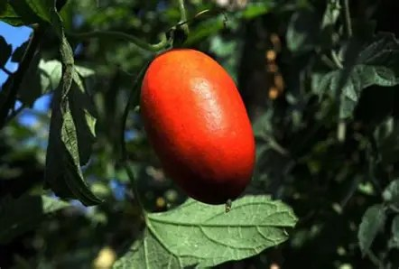
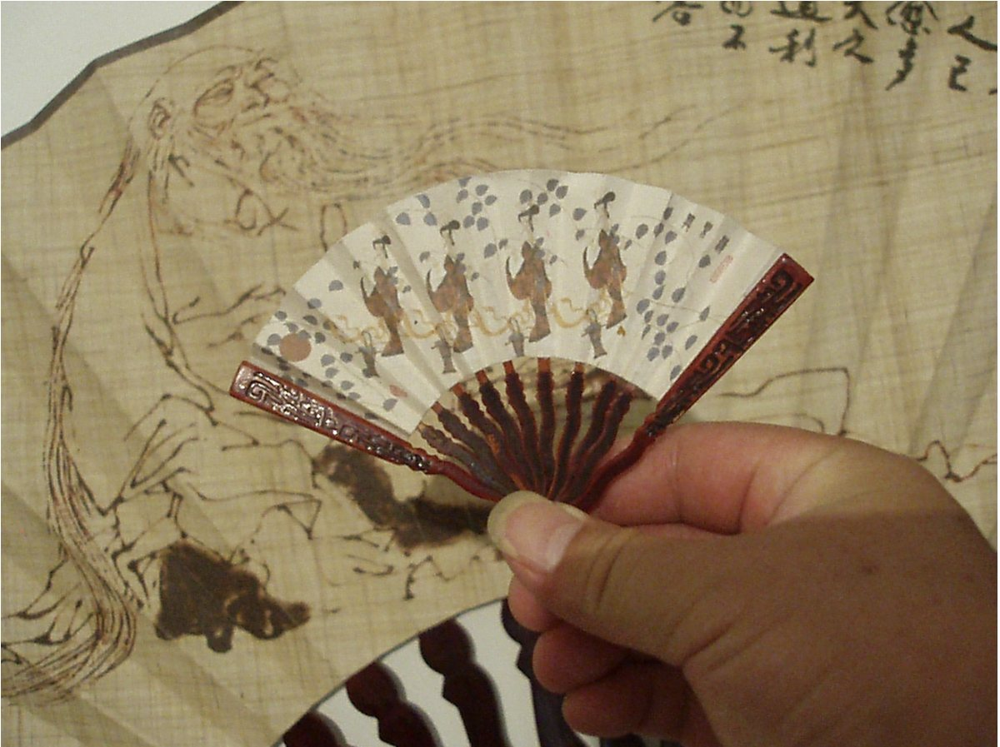
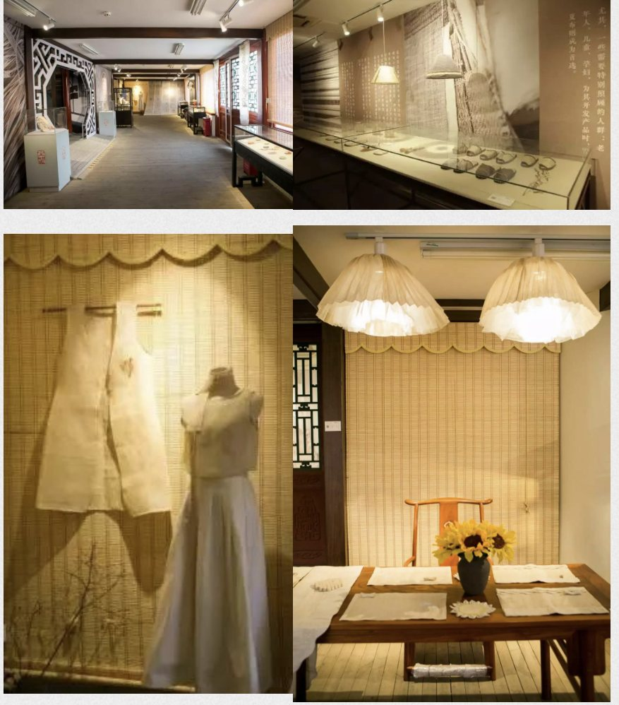
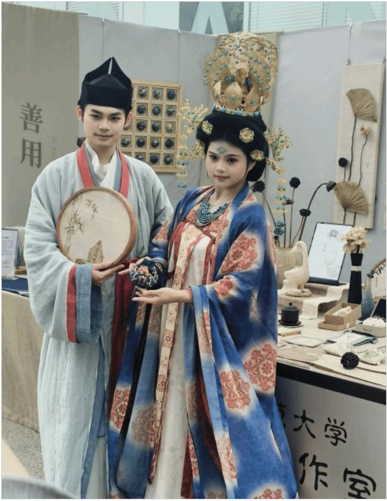
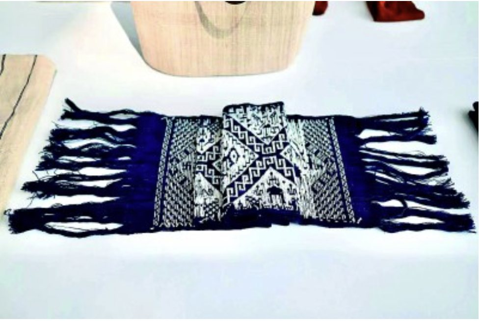
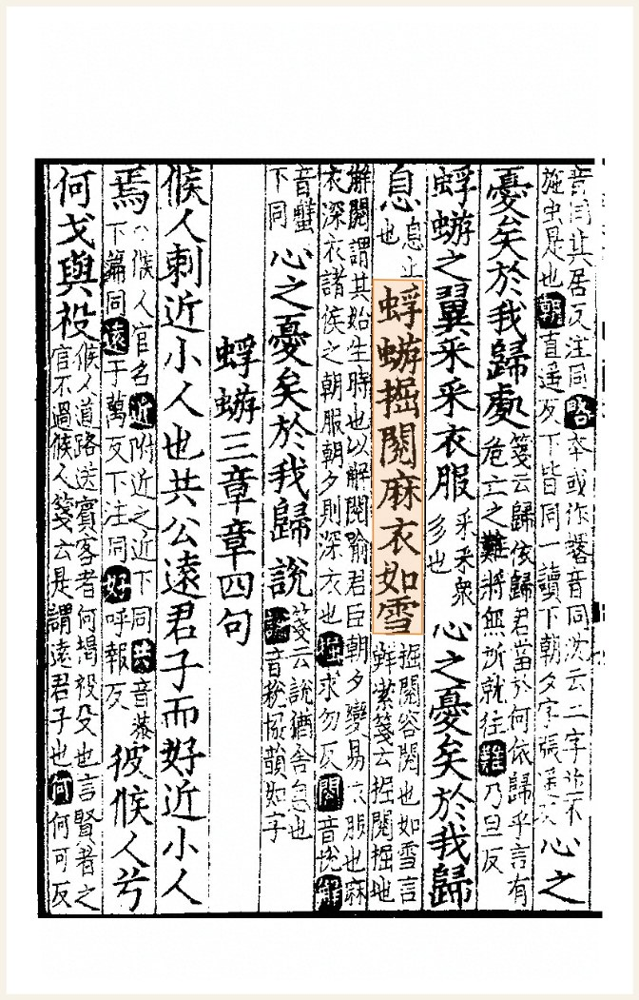
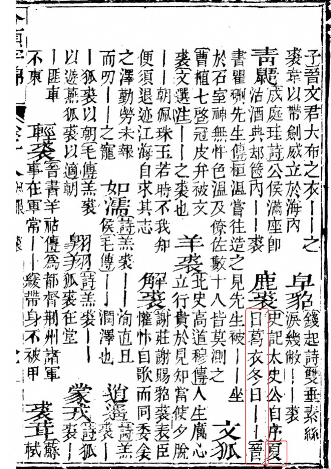
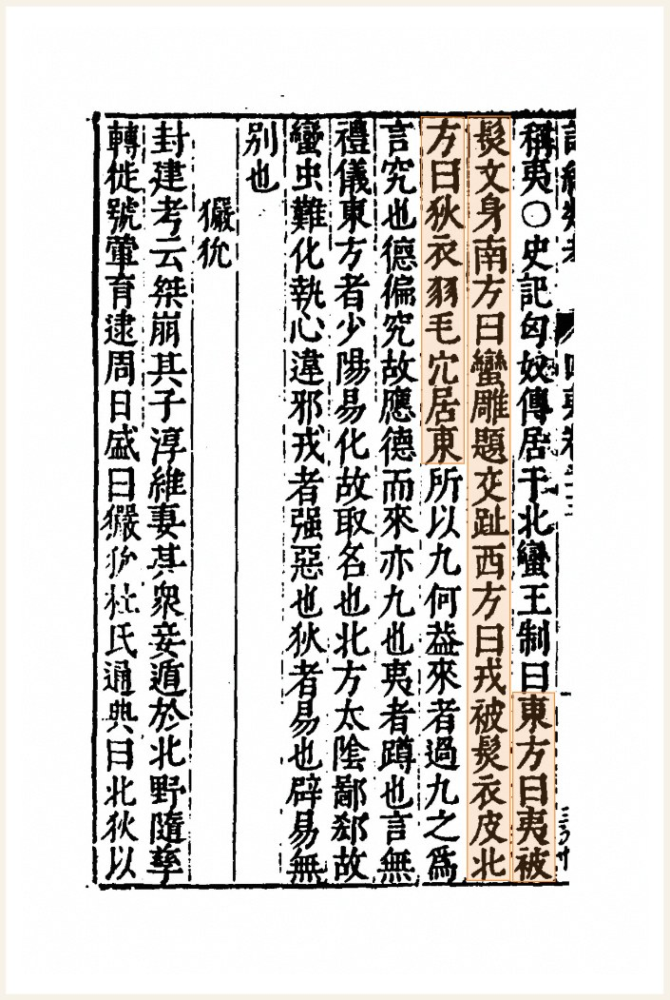
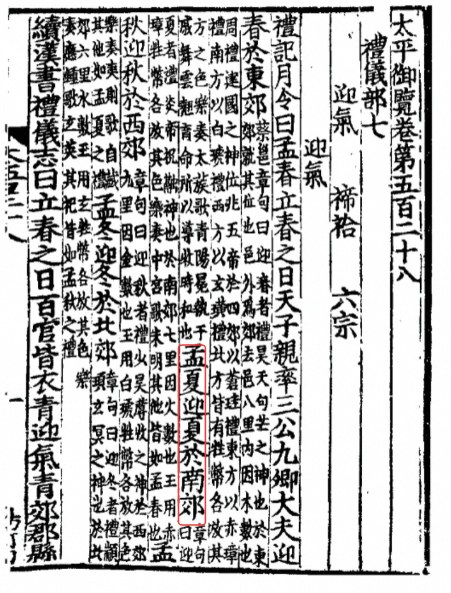

候
三候 · 夏之信
“蝼蝈鸣，蚯蚓出，王瓜生。”——《礼记·月令》

蛙声、蚯蚓与王瓜，是听觉、土壤与植物给出的三封“入夏通知”。
立夏不等于入夏，却是古人“换衣”的起点：天时、颜色与材料，在一件夏衣上会合。
孟夏之月……是月也，天子始絺。
《礼记 · 月令》
太阳到达黄经 45°，约在公历 5 月 5—6 日交节。“斗指东南，维为立夏，万物至此皆长大”（《历书》）——但节气立夏并不等于气象入夏：气象学上需连续五天日均温 ≥ 22℃，于是华南、江南已近夏，华北、东北仍是春末。
古人用物候记气候。《礼记·月令》写孟夏：“蝼蝈鸣，蚯蚓出，王瓜生，苦菜秀。”而穿衣，正是人对这套物候最直接、也最日常的回应：天时变了，衣料与衣色先变。
“蝼蝈鸣，蚯蚓出，王瓜生。”——《礼记·月令》

蛙声、蚯蚓与王瓜，是听觉、土壤与植物给出的三封“入夏通知”。
“衣朱衣，服赤玉。”——《礼记·月令》
五色配五方五行：春青、夏赤、秋白、冬黑。立夏百官衣赤，是把“火德”穿在身上。
“为絺为绤，服之无斁。”——《诗经·周南·葛覃》
在棉花到来之前，中国人的夏衣由葛与麻织成：细葛为“絺”，粗葛为“绤”。
从新石器时代的葛布，到今天空调房里的化纤与亚麻。点击任一时代，展开这卷史料与故事。
夏衣的历史，一半是形制史，一半是材料史。葛、麻、丝、棉、化纤——每一种材料的普及，都改写了一个时代的夏天。
“亲民”一栏衡量的是普通人的可获得性：丝最贵，棉最普及，化纤最便宜。
物产决定材料，材料塑造穿着习惯。同在一个立夏，南方与北方穿出了两套视觉语言。
湿热多雨，苎麻与葛生长适宜。衣料轻薄、颜色浅淡、形制简洁，是水乡夏天的共同表情。
干热、昼夜温差大。衣料相对厚重，色彩浓深，装饰繁复，一件衣裳要同时应付正午与夜凉。
技术的另一只手：从腰机到织机改良，“半晒半浸”的脱胶法，决定了夏布的产量与普及；丝、麻、棉的成本差，又造成了贵族与平民的夏衣分层。
空调、化纤与快时尚改变了穿衣逻辑，夏布退出日常；但作为非遗与可持续材料，它又在设计与展览中重新被看见。
数据回应“为什么夏季要换衣”——不是习俗选择，而是热湿环境下的生理需求。
夏布没有消失，它只是换了场合。
重庆荣昌、江西万载的夏布织造技艺于 2008 年列入国家级非物质文化遗产名录；湖南浏阳、四川隆昌的夏布同样延续至今。清华美院、北京服装学院等院校把夏布带进研究站与设计课，荣昌夏布折扇、夏布桌旗、夏布服饰重新出现在展台与日常。




十二则史料，从《礼记》到《清嘉录》。点击卡片，展开原文、出处与一句解释。




史料引文以传世文献为准，异体字与通行本差异已在注释中说明。民俗部分凡标“区域个案”者，不作全国性概括。